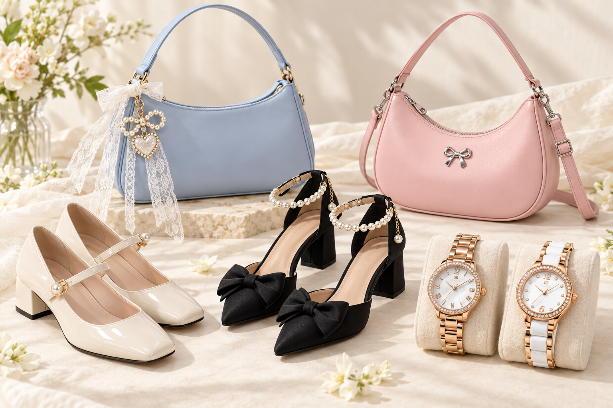

DESIGN
สี รูปทรง และรายละเอียดที่สะดุดตา เป็นสิ่งแรกที่ทำให้ฉันสนใจของแต่ละชิ้น
THE PERSON BEHIND THE COLLECTION
รู้จักตัวตนผ่านสิ่งที่ฉันเลือกเก็บ

MY PERSONAL STORY
ฉันเป็นคนที่สนุกกับการแต่งตัว และชอบสังเกตรายละเอียดของสิ่งของรอบตัว โดยเฉพาะรองเท้า กระเป๋า และนาฬิกา เพราะของแต่ละชิ้นสามารถเปลี่ยนความรู้สึก ของการแต่งตัวในแต่ละวันได้
คอลเลกชันนี้เริ่มจากการเลือกของที่ถูกใจ ทั้งสี รูปทรง และรายละเอียดเล็ก ๆ เมื่อเวลาผ่านไป ของเหล่านี้จึงกลายเป็น สิ่งที่สะท้อนความชอบและสไตล์ของฉัน
“สไตล์ของฉัน อยู่ในรายละเอียดที่ฉันเลือก”
ฉันจึงนำความสนใจนี้มาสร้างเป็นเว็บไซต์ Personal Collection เพื่อรวบรวมภาพ จัดหมวดหมู่ และเล่าเหตุผลที่ชอบของแต่ละชิ้น ผ่านการออกแบบที่เรียบง่ายและให้ภาพเป็นจุดเด่น
WHAT MATTERS TO ME
สี รูปทรง และรายละเอียดที่สะดุดตา เป็นสิ่งแรกที่ทำให้ฉันสนใจของแต่ละชิ้น
เลือกสิ่งที่เข้ากับเสื้อผ้าและชีวิตประจำวัน เพื่อให้ความชอบเป็นส่วนหนึ่งของการใช้งานจริง
ความรู้สึกและความทรงจำที่ผูกกับสิ่งของ ทำให้แต่ละชิ้นมีความหมายในแบบของตัวเอง
EXPLORE MY WORLD